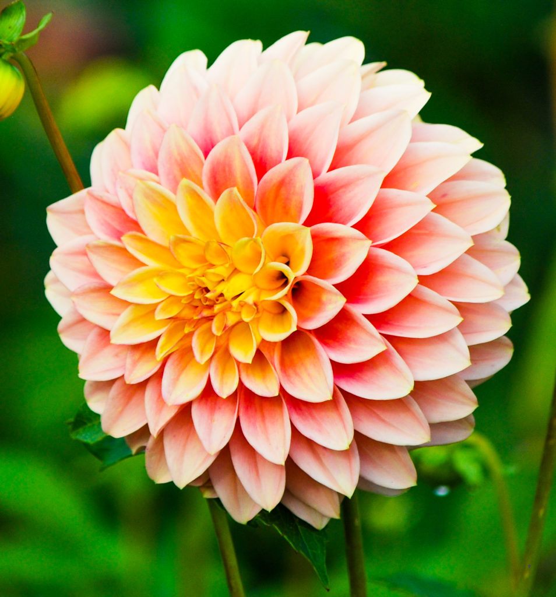
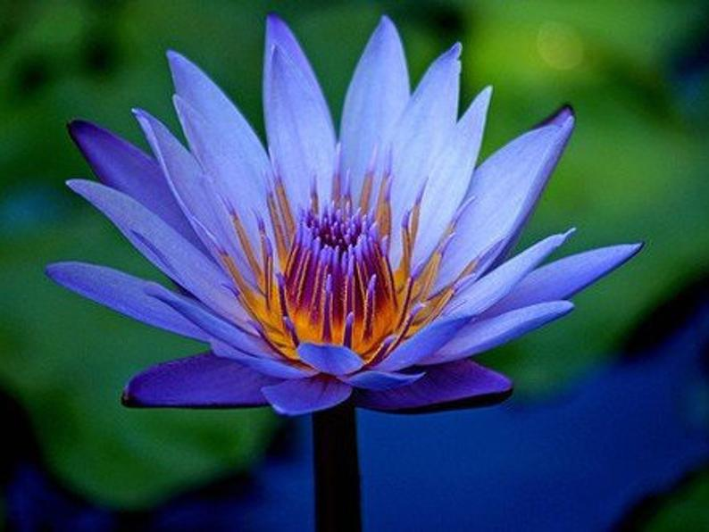
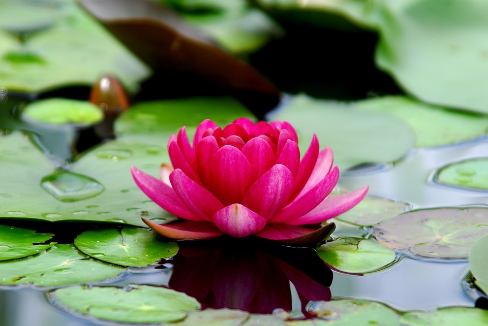
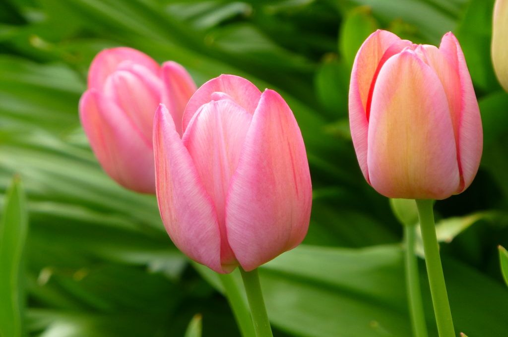
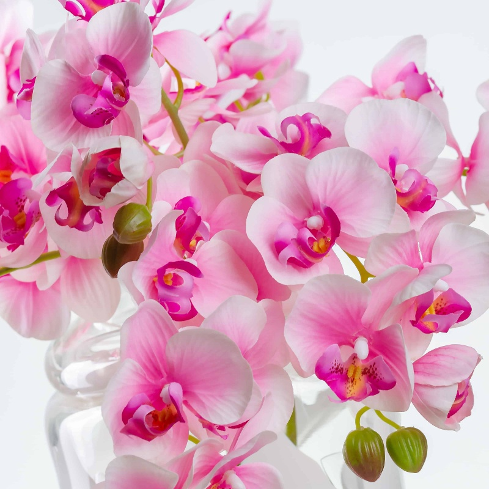

Flor de cerejeira

As flores de cerejeira simbolizam a chegada da primavera,a estação das flores. A linda flor rosa e branca abre no final de março ou início de abril. O período de floração pode durar até 14 dias.
Coração Sangrento

A flor pode ser encontrada nas cores rosa, vermelho, amarelo e branco. Mas,pétalas externas cor de rosa com pequenas pontas brancas parecem mais atraentes. Quando uma pequena gota de água aparece na ponta da flor, essas flores realmente parecem corações sangrando,como o próprio nome sugere.
Dália
A Dália é nativa do México. Mas, hoje é amplamente cultivada. As flores incrivelmente coloridas florescem entre o meio do verão e a primavera.Para promover a floração, é necessário cortar o caule após as primeiras flores desaparecerem.
Nenúfares
Além da atenção que chama, os nenúfares também ajudam a proteger o ecossistema em que vivem, equilibrando a temperatura da água e proporcionando um excelente habitat para os peixes.
Lótus
Lótus é uma das belas flores aquáticas encontradas em águas rasas e escuras. Elas não podem sobreviver no clima frio. Lotus precisa de sol pleno para um crescimento saudável. Esta flor sensível à luz abre de manhã e fecha à noite.
Tulipa
Existem mais de 3000 variedades de Tulipas de 150 espécies diferentes no mundo. Essa diversidade em si faz dela uma das flores mais populares e mais cultivadas do mundo.
Orquídea
Existem Orquídeas grandes e pequenas, Orquídeas de vida curta e longa. Além desses fatos, as características mais destacadas das Orquídeas são cores vibrantes e exclusivas. Algumas espécies de Orquídeas se parecem exatamente com outras figuras, como animais ou plantas.